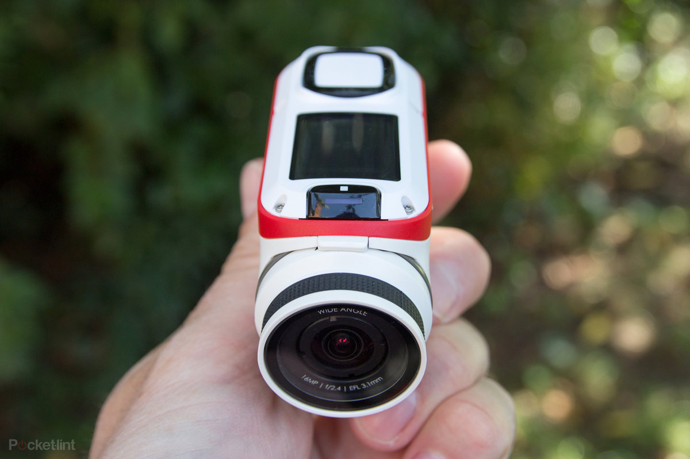
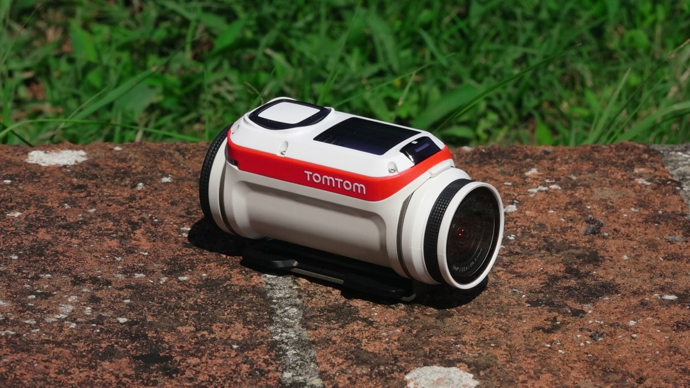
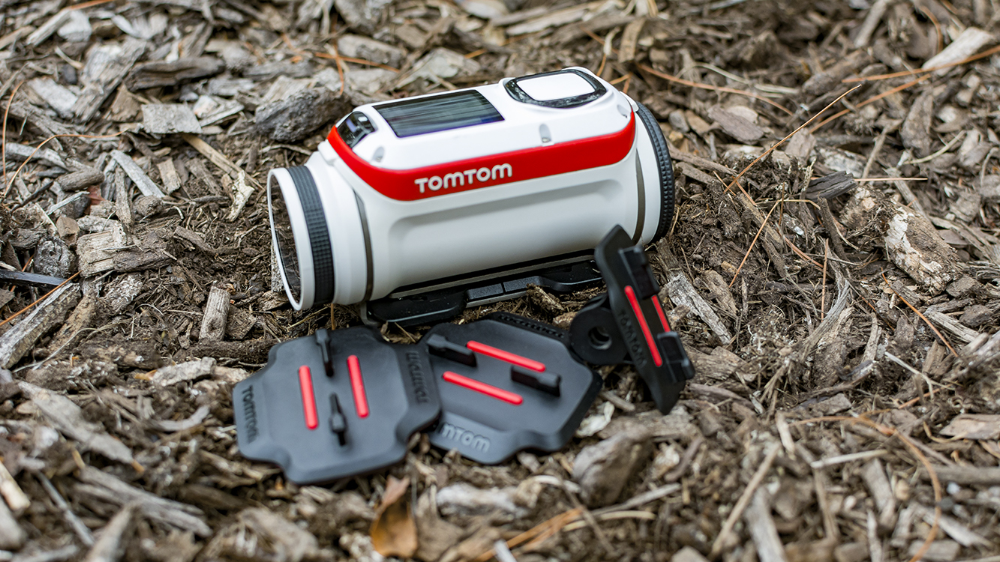
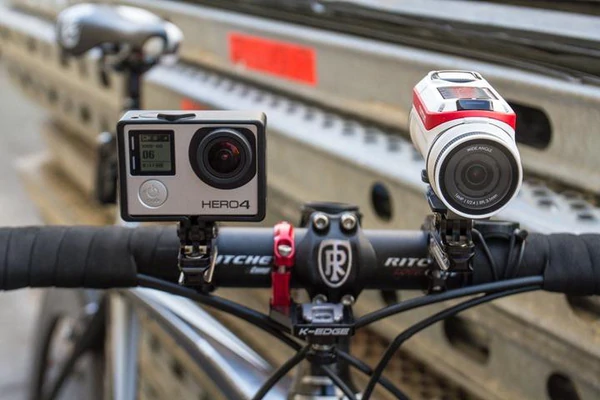
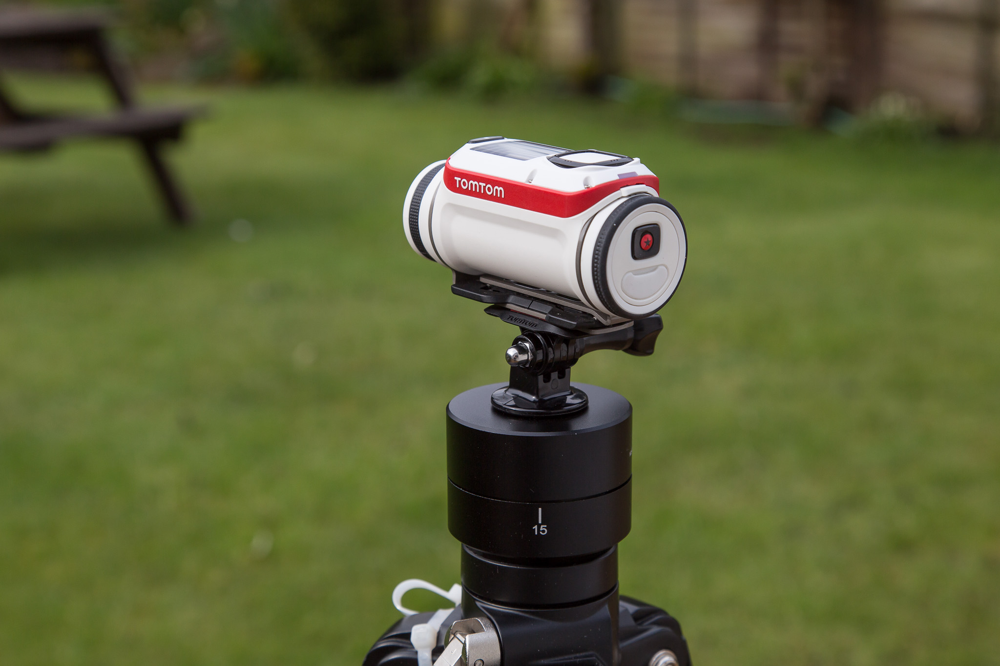
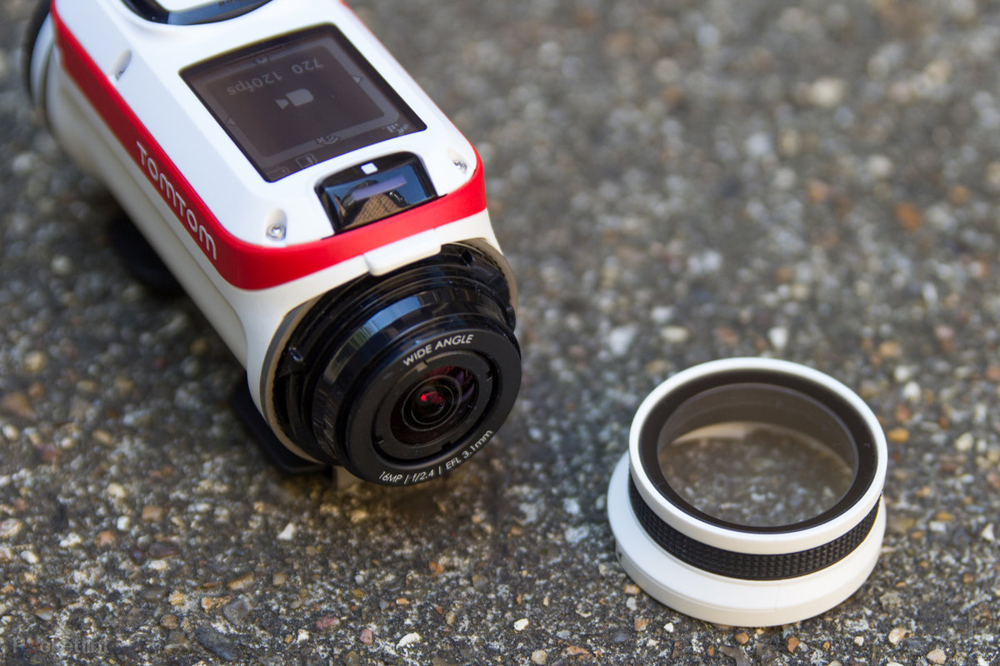

| First Impressions |
|
I first laid eyes on the TomTom Bandit amongst a fellow group of bloggers and the resounding impression was that it looked sleek and kind of like a light sabre! Clean, white and with red detailing it certainly looked the part! The tubular design makes it easy to hold and to shoot with and its heavy enough to feel steady and robust, whilst still light enough to chuck in your pocket or mount it. So yeah, first impressions were pretty solid!
|
 |
| The User Experience |
| I’m always a keen advocate of trying not to read a user manual before playing with a new bit of tech – it’s the best way to test out how intuitive a device is and how much effort has been put into the user experience. The TomTom Bandit is a pretty simple setup so it wasn’t hard to figure out – in fact there are only 2 buttons, a set of directional arrows, a release on the front lens and a release on the back…there’s not much room to get lost! TomTom have also made the decision to make a dedicated start and a dedicated stop button for recording video – which is awesome as you don’t accidentally stop recording. Perfect if your shooting in some slightly more action packed situations or aren’t sure if you hit record! |
 |
| No More Cables |
| Alongside the ease of use on the user menu is the fact TomTom have opted to ditch the cables – for both recharging and downloading your images. They’ve done this through the use of a USB stick which is easily removed and inserted from the camera body – complete with micro SD slot and battery light indicators. Your can then charge it via the computer, a USB socket (I actually used my iPhone charger!), in car USB charger or one of those awesome power sticks, which were a great variety of options on the move and allowed me to shoot even more footage on top of the 3 hours of shooting time on a full charge. |
 |
| Highlight Button? |
| For me this is one of the best features of the TomTom Bandit though is the highlight button. This red star is positioned on the end of the camera and as well as acting as the start recording button you can also use it to “tag” highlights during filming. Not only that though but the built in sensors on the TomTom Bandit also make additional highlights too based on movement and even speed, so if you quickly pan to capture the action or find yourself accelerating (as was the case whilst zip lining and quad biking) when you come to editing it has already made a note of it! How epic is that?! |
 |
| The App & Shake To Edit |
| Ok so the highlighting thing is cool in theory but how does it work in practice? Well after connecting your TomTom Bandit to your smartphone via the inbuilt wifi (which is quickly activated via a single navigation button in any mode) you boot up the Bandit App. This allows you to live preview what you’re currently shooting, switch modes on the camera, start/stop recording and of course review and download the footage you have already taken – both videos and photos. However the real magic lies within the “shake to edit” feature. Clicking on “Create A Story” you have two options – “Shake To Edit” and “Add Highlights” If you have some more time on your hands, creativity or video know how then you can also manually select from your library or highlight reel and put together your own edit or add to the shake to edit selection. This is easily done and you can then rearrange them with a simple drop and drag format. |
 |
| So Should I Get One?! |
| On my first day shooting with the TomTom Bandit I also took my GoPro along for the ride as a backup – not wanting to miss capturing any of the cool stuff I was getting up to. I didn’t turn the GoPro on all day and it never left my backpack for the remainder of the trip! With the TomTom Bandit Base Pack (including 2 sticky mounts and GoPro adaptor mount) at £299 and the Premium Pack (with the addition of the remote control, dive lens, 360 pitch mount and handle bar mount) at £379 it’s very much in the same price bracket as the GoPro range – especially with the GoPro Hero 4. |
 |